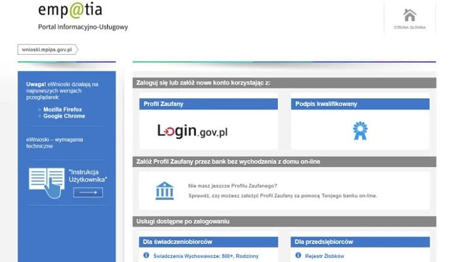
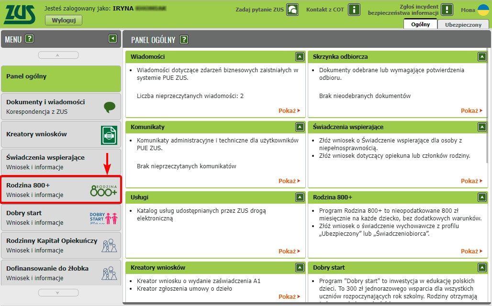
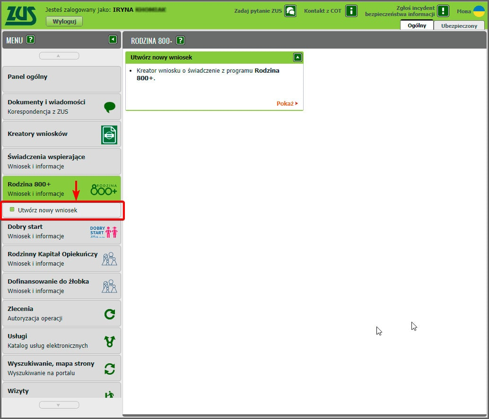

Rodzina 800+ — Как Иностранцам Получить Помощь
Что такое Rodzina 800+ в Польше? Эта инициатива направлена на поддержку демографического развития в Польше, предоставляя семьям возможность получения ежемесячной финансовой помощи в размере 800 злотых за каждого ребенка.
С 1 января 2024 года размер пособия по уходу за ребенком будет увеличен с 500 до 800 злотых. ZUS самостоятельно изменить его размер. Поэтому вам не нужно подавать дополнительную заявку. Выплаты пособий в новом размере будут осуществляться с января 2024 года.
7 августа 2023 года Президент Республики Польша Анджей Дуда подписал поправки к Закону о государственной помощи в воспитании детей. Это означает, что с 1 января 2024 года размер родительского возмещения (т.н. 500+) составит 800 злотых на каждого ребенка до достижения им 18-летнего возраста.
С 1 января 2024 года размер пособия по уходу за ребенком для всех лиц, имеющих на него право, будет увеличен с 500 до 800 злотых. Для родителей и опекунов это означает, что на их счета каждый год будет переводиться больше средств для содержания ребенка. В случае одного ребенка она составит дополнительно 3600 злотых, для двоих детей – 7200 злотых, а для троих детей – 10800 злотых.
Программа охватывает не только граждан Польши, но и определенные группы иностранных резидентов, живущих в стране (более детальная информация о критериях для не польских граждан, имеющих право на участие в программе «Rodzina 800+», будет предоставлена далее).
Почему Программа Семья 800+ Актуальна?
Актуальность программы "Семья 800+" напрямую связана с острой проблемой демографического спада в Польше, явление, к сожалению, далеко не новое. Хотя подробный анализ причин и последствий этого явления выходит за рамки нашего обсуждения, важно осветить некоторые ключевые данные для понимания масштабов ситуации.
Приведем в качестве иллюстрации период с 2010 по 2015 год, в течение которого наблюдалось стойкое сокращение численности населения страны. Так, если в 2010 году демографический прирост составил примерно 33 000 человек, то к 2015 году зафиксировано снижение на 41 500 человек, что подчеркивает сохраняющуюся тенденцию к демографическому убыванию.
Кто Может Получать 800 Злотых На Ребенка?
Определим категории лиц, имеющих право на участие в программе. Это включает в себя всех граждан Польши, а также определенных иностранных граждан (указанных далее), которые имеют детей. Согласно изменениям, принятым в 2019 году, уровень дохода семьи больше не является критерием для получения помощи; субсидия предоставляется всем семьям, начиная с первого ребенка, без исключения.
Право на получение этой субсидии имеют только те, кто фактически проживает в Польше. Гражданам Польши и иностранцам, проживающим или работающим за границей, даже в другом государстве-члене Европейского Союза, эта финансовая помощь не полагается.
Правительство имеет полномочия проверять факт проживания заявителя в стране, используя различные методы, включая физическую проверку места жительства лица и анализ европейских баз данных о налогообложении.
Могут Ли Иностранцы Получить Поддержу?
Вопрос о доступности программы «Семья 800+» для иностранцев заслуживает особого внимания. Не все иностранные граждане могут претендовать на эту субсидию, хотя многим это доступно. Квалифицироваться для участия в программе могут иностранцы, которые:
- Имеют разрешение на пребывание в связи с выполнением квалифицированной работы.
- Обладают разрешением на пребывание, предоставляющим право на работу.
Законодательство не требует наличия постоянного вида на жительство в Польше для получения помощи, однако существуют ограничения для иностранцев из стран вне ЕС. Так, иностранцы, работающие по визе, имеющие разрешение на пребывание на срок менее полугода или занятые на сезонных работах, не могут получить субсидию. Это означает, что большинство вариантов получения субсидии по визе ограничено.
Необходимость наличия идентификационного номера PESEL также подчеркивает требование к статусу иностранца; в случаях, когда PESEL обязателен и не может быть заменен номером NIP, статус пребывания иностранца должен соответствовать установленным требованиям.
В 2022 году право на получение субсидии было расширено до включения беженцев из Украины, которые оформили статус UKR. Детали процесса оформления помощи «800+» для украинских беженцев будут рассмотрены отдельно.
Инструкция Оформления Субсидии По Программе «семья 800+»
С 2022 года в Польше подача заявлений на получение государственных услуг, включая программу помощи, перешла в полностью онлайн-формат. Для этого предусмотрены несколько каналов: интернет-банкинг, официальный сайт Закладу Убезпечення Спољечнего (ZUS), который теперь отвечает за обработку заявлений, и платформа Emp@tia, на которой мы остановимся подробнее. Процесс подачи заявления через платформу Emp@tia включает следующие этапы:
Шаг 1: Подготовка документов
Необходимо собрать стандартный набор документов, который включает:
- Заграничный паспорт с визой (при наличии) или документ, подтверждающий право на проживание и доступ к рынку труда.
- Документы, подтверждающие семейное положение.
- Свидетельства о рождении детей.
- Заполненное заявление.
Отметим, что все документы, не на польском языке (кроме паспорта), должны быть официально переведены с проставлением апостиля, если это требуется, через присяжного переводчика.
ZUS оставляет за собой право запросить дополнительные документы, хотя такие случаи встречаются редко.
Этот переход на цифровую подачу заявлений упрощает процесс обращения за государственной помощью, делая его более доступным и удобным для всех категорий населения, включая иностранных граждан, проживающих в Польше.
Шаг 2: Процедура подачи заявления
За рассмотрение заявлений отвечает Заклад Убезпечення Спољечнего (ZUS). В определённых ситуациях, заявки могут быть направлены напрямую в органы социальной поддержки или другие государственные и муниципальные институции.
Подача заявлений осуществляется исключительно онлайн, требуя от заявителей прохождения идентификации через такие системы, как интернет-банкинг, PUE ZUS или профиль ePUAP. Процесс подачи через Emp@tia будет рассмотрен отдельно.
Детальные инструкции по подаче заявления онлайн:
- Начните с посещения портала Emp@tia.
- Пройдите процесс регистрации, используя один из доступных методов:
1. Данные интернет-банкинга ведущих польских банков (например, PKO, Inteligo, Pekao).
2. Profil Zaufany.
3. Электронная подпись. - Выберите соответствующий способ идентификации, введите требуемые данные.
- При необходимости загрузите копии документов.
- Отправьте ваше заявление на проверку.
Этот процесс подчеркивает цифровизацию взаимодействия граждан с государственными услугами, упрощая доступ к программам поддержки и обеспечивая удобство и эффективность подачи заявлений.

После отправки заявления на участие в программе на указанные контактные данные придет уведомление о начале его рассмотрения. Это критически важный этап, поскольку без получения такого подтверждения процесс считается не начатым.
Шаг 2.2: Альтернативный метод подачи заявления – через PUE ZUS
Этот способ не является продолжением предыдущего, а представляет собой другой вариант подачи заявления, предложенный на шаге 2.1. Для его реализации требуется пройти регистрацию на платформе PUE ZUS.
Инструкция по использованию данного метода включает следующие шаги:
- Посетите официальный сайт ZUS.
- Пройдите процедуру авторизации.
- В меню выберите разделы «Ogólny», «Ubezpieczony» или «Świadczeniobiorca».
- В левой части меню найдите и кликните на опцию «Rodzina 800+».
- Кликните по «Utwórz nowy wniosek».
Таким образом, предоставляется возможность выбора удобного способа подачи заявления для участия в программе, обеспечивая доступность и гибкость процесса для всех потенциальных участников.


После заполнения необходимо подать заявление. Информацию о решении по предоставлению льготы можно будет найти в разделе «Świadczeniobiorca» → «Dokumenty i wiadomości» → «Skrzynka odbiorcza».
Шаг 3: Сроки рассмотрения заявления
Конкретные сроки рассмотрения заявлений не установлены, однако существует требование осуществить первую выплату до конца месяца, следующего за месяцем подачи заявления.
Например, если заявление подано 25 января, первая выплата должна быть произведена до 28 (29) февраля, что означает, что к этому времени решение по заявлению уже будет принято. Это правило применяется к первичной подаче; в случае повторной подачи, при условии своевременного предоставления документов и отсутствия изменений в основаниях, выплаты будут производиться регулярно.
Шаг 4: Получение выплат
В случае одобрения заявления, средства будут перечислены на указанный в процессе регистрации банковский счет. С 2022 года это единственный способ получения пособия; получение наличных через кассу или почтовые переводы более не предусмотрено.
Часто Задаваемые Вопросы О Программе Rodzina 800+
После ознакомления с ключевой информацией о программе "Rodzina 800+" рассмотрим ответы на наиболее часто задаваемые вопросы относительно её условий и процедур.
Когда подавать заявление?
Заявления на получение пособия подаются ежегодно. Важно отметить, что:
- Выплаты по программе проводятся с июня по май следующего года.
- Чтобы пособие выплачивалось без перерывов, заявление необходимо подать до конца апреля каждого года.
- С 2022 года заявления принимаются исключительно через интернет, начиная с 1 февраля.
- Подача заявлений возможна и после 1 мая, но в таком случае выплаты начнутся с месяца подачи заявления.
Каков размер пособия?
Сумма пособия составляет 800 злотых ежемесячно на каждого ребенка, имеющего право на получение субсидии в рамках программы "Семья 800+".
На какой срок назначается пособие?
Пособие предоставляется детям до достижения ими 18 лет. Обсуждается внесение изменений в закон, которые позволят продлить выплаты и для совершеннолетних студентов, однако на момент текущего обсуждения эти изменения ещё не были приняты.